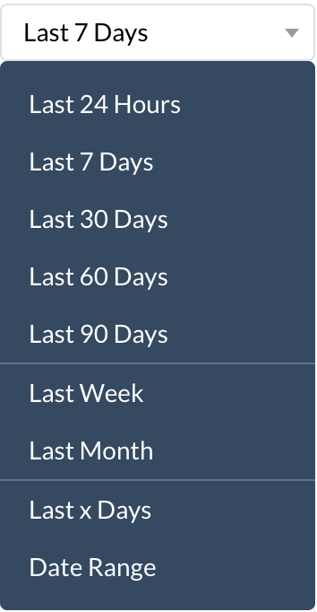
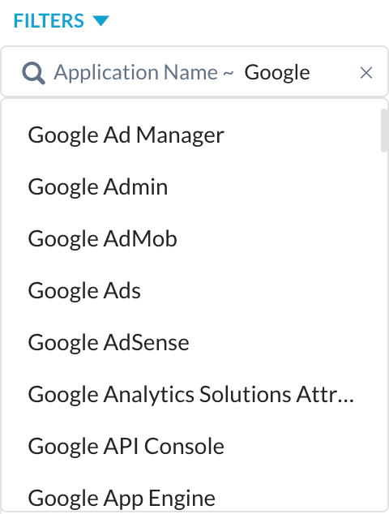
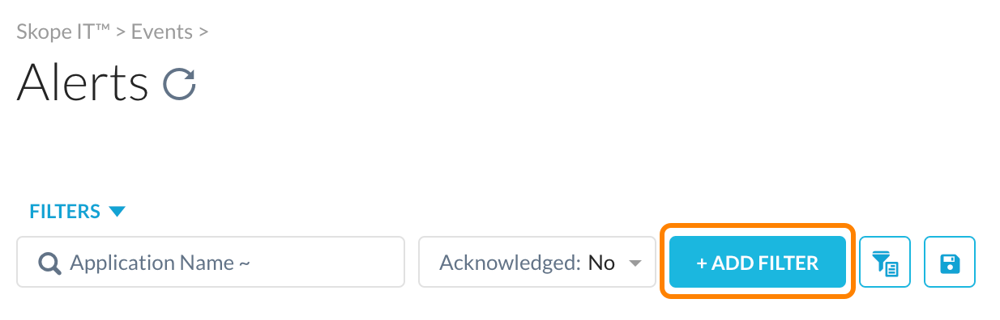
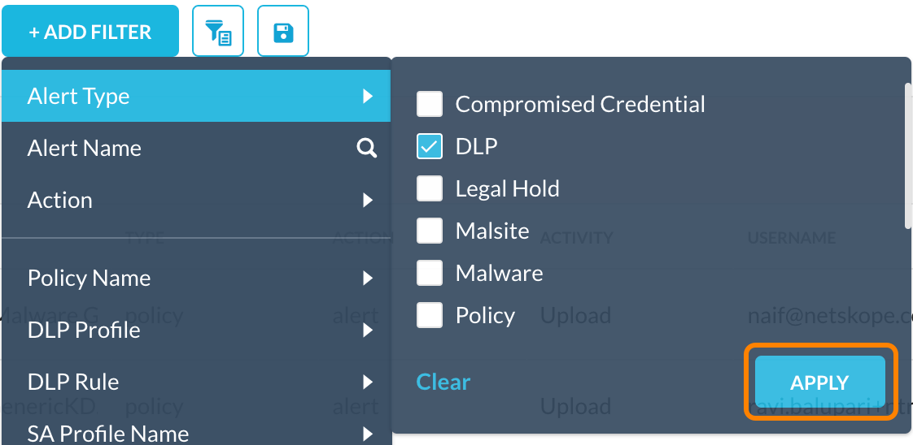
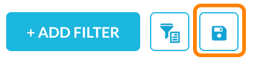
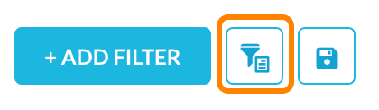

About Alerts
To view Skope IT Alerts monitored by the Netskope analytics engine, go to Skope IT > Events > Alerts.
Default Alerts Page Table
The default Alerts page table includes:
Time: The day and hour the alert occurred.
Name: The policy that triggered the alert.
Type: What triggered the alert, like policy, DLP, malware, anomaly, etc.
Action: Type of remediation taken, like alert, block, and detection.
Activity: What the user was doing when the violation occurred.
Username: Email address of the user who caused the violation.
Application: App used when the violation occurred.
Site: Site where the violation occurred.
Object: Actual file name, folder name, etc., that caused the alert. For example, a download activity shows an object value of CreditReportAAA111.pdf. Corresponds with the following column.
Account Name: Name of the account.
Alerts Page Components
This Alerts page has these components:
Alerts table: Displays specified alerts information. To change the information displayed, use the Customize Columns dialog box. Use the Sort By list in the table header row to arrange the listings in the table. Time is when the alert occurred in the cloud platform.
Refresh Page button: To update the page with the most current information, click next to the page title.
Customize Columns dialog box: To customize the columns shown for each alert, click the gear icon
 located at the far right of the table column header row, and then select the columns you want to see. For more details, refer to Customize Columns below.
located at the far right of the table column header row, and then select the columns you want to see. For more details, refer to Customize Columns below.Date Range list: In the top right corner of the page is a date range filter. Click and select one of these date ranges.
Application search filter: This search field helps you find applications and then filter results. Enter a name and then select from the list.
Acknowledge setting: To remove an alert from this page, enable the check boxes beside one or more alerts, click Acknowledge, and then choose Acknowledge Selected or Acknowledge All.
Note
If you have a query or filter, selecting the Acknowledge All option acknowledges all the alerts from the current query or filter.
Add Filter lists: To create a filter, click + Add Filter.
Select what to include what to find in the search, and then click Apply.
Tip
You can choose multiple items for some options. The options with the
 icon allows you to search.
icon allows you to search.Save Filter button: After adding a filter, you can save it for future searches by clicking Save Filter.
Query Mode button: Optionally, switch to query mode
 and enter a query in the search field. For example, to specify which app to search for, the domain, and the user's email address, enter the following query.
and enter a query in the search field. For example, to specify which app to search for, the domain, and the user's email address, enter the following query. app eq 'Google Drive' and instance_id eq '<yourcompany.com>' and user eq '<user@yourcompany.com>'
You can pin the query by clicking the pin icon
 to remember the query across the Application Events, Page Events, and Alerts pages.
to remember the query across the Application Events, Page Events, and Alerts pages.To change back to the filter view, click Filter Mode.
Export button: Click Export to get the entire list of application events. First select the columns to export (those displayed, or specify which columns), and the number of rows, then click Export again. Your column and row selections are retained for future exports.
You will be sent an email with a link that allows you to download the list in CSV format.
Alert Details panel: Click the magnifying glass icon besides any listing to view more details about the alert. The default view shows the alerts for the last 7 days unless you change the date range setting.

Rows per page list: At the bottom right corner of the page, the Rows per page list allows you to display 10, 20, 30, 50, or 100 rows per page.
Customize Columns
Use the Customize Columns dialog box to specify the information you want to see.
To access the Customize Columns dialog box, click , and then select the information you want to see.
The following information provides a brief description of each column:
Alert: Includes Name, Type, Action, Activity, and Acknowledged information.
Rule: Includes Policy Name, DLP Profile Name, DLP Rule Name, SA Profile Name, SA Rule Name, and SA Rule Severity information.
User: Includes Username, IP Address, Host Name, OS, Device Type, Device Classification, User Group, and OU information.
Application: Includes Application, Category, Site, CCL, Instance ID, URL, Account Name, and Region information.
Object: Includes Object, Object Type, and Resource Category information.
General: Includes Traffic Type, Access Method, Managed Application, and Browser information.
Source: Includes Source IP Address, Source Location, Source Region, Source Zip Code, and Source Country information.
Destination: Includes Destination IP Address, Destination Port, Destination Location, Destination Region, and Destination Country information.
Tip
Click Restore Defaults to restore column-related default settings.